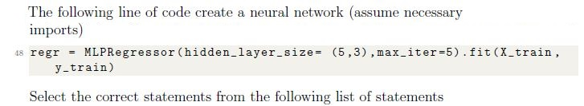
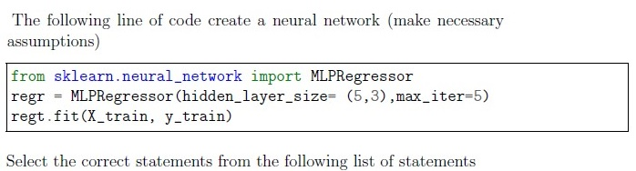
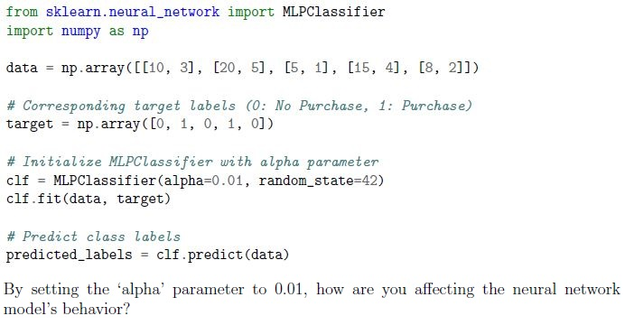
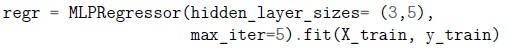

Home / MLP / Week 11 / Real questions
MLP week 11 - real exam questions
14 questions pulled from past papers whose wording matches this week's topics, newest first, duplicates removed. Pick your answers, then press Check answers. Figures and answer keys are the originals.
Elapsed 00:00
Analyze the following code snippet:
 Which of the following statements are correct?
Which of the following statements are correct?
Which of the following statements are correct?- mlp2 has more trainable parameters than mlp1.
- Changing random_state may change predictions even with the same dataset.
- Using 'sgd' solver always gives higher accuracy than 'adam'.
- 'tanh' activation guarantees better performance than 'relu'.
What does the parameter hidden_layer_sizes=(50, 30) represent in both MLPClassifier and MLPRegressor?
- 50 input features and 30 output units
- Two hidden layers with 50 and 30 neurons respectively
- 50 epochs and 30 batches
- 50 samples per batch and 30 iterations

- Increasing the number of hidden layers always improves regression accuracy.
- Using the ReLU activation function in hidden layers is a good choice for MLPregression.
- The output layer should use a softmax activation to predict continuous houseprices.
- MLPRegressor does not require feature scaling since neural networksautomatically normalize input data.

- The neural network contains 3 hidden layers with 5 neurons in each hiddenlayer
- The neural network contains 5 hidden layers with 3 neurons in each hiddenlayer
- The neural network contains 2 hidden layers with 3 neurons in the secondhidden layer
- The neural network contains 2 hidden layers with 5 neurons in the first hiddenlayer
- None of the given options are correct

- The neural network contains 3 hidden layers with 5 neurons in each hiddenlayer
- The neural network contains 5 hidden layers with 3 neurons in each hiddenlayer
- The neural network contains 2 hidden layers with 3 neurons in the secondhidden layer
- The neural network contains 2 hidden layers with 5 neurons in the first hiddenlayer
- None of the given options are correct
Which of the following class(es) is/are used to instantiate a neural network in Sklearn.
- SGDClassifier()
- MLPClassifier()
- NNClassifier()
- MLPRegressor()

- The neural network contains 3 hidden layers with 5 neurons in each hiddenlayer
- The neural network contains 5 hidden layers with 3 neurons in each hiddenlayer
- The neural network contains 2 hidden layers with 3 neurons in the secondhidden layer
- The neural network contains 2 hidden layers with 5 neurons in the first hiddenlayer
- All of the given options are correct

- logistic
- relu
- identity
- tanh
You’re building an ‘MLPClassifier‘ for a dataset with a large number of features. The goal is to predict whether a patient is going to have parkinson disease in next 12 months. You’re trying to decide the appropriate number of neurons in the hidden layers of the neural network. Which statement about adjusting the hidden_layer_sizes parameter is correct?
- Increasing the number of neurons in hidden layers will always lead to bettermodel performance.
- Decreasing the number of neurons in hidden layers reduces the model’scapacity to capture complex patterns.
- The number of neurons in hidden layers does not significantly affect themodel’s performance.
- Finding the optimal number of neurons is a trial-and-error process and mayrequire experimentation.
You’re designing an ‘MLPClassifier’ for an image recognition task. The dataset consists of grayscale images of animals. You want to introduce non-linearity to the neural network’s architecture. Which element of the neural network architecture would you adjust to incorporate non-linearity in the model?
- Number of hidden layers
- Number of neurons in input layer
- Learning rate
- Activation function
You’re working on a binary classification task using the ‘MLPClassifier’ to predict whether a customer will make a purchase based on their browsing behavior.You’re concerned about overfitting due to the complexity of the model. You decide to increase the ‘alpha’ parameter to control overfitting. The following code snippet shows the application of ‘MLPClassifier’:

You’re working on a binary classification task using the ‘MLPClassifier’ to predict whether a customer will make a purchase based on their browsing behavior.You’re concerned about overfitting due to the complexity of the model. You decide to increase the ‘alpha’ parameter to control overfitting. The following code snippet shows the application of ‘MLPClassifier’:- Increasing the model’s complexity to fit the training data more closely.
- Adding a stronger regularization term to the loss function, discouragingcomplex models.
- Making the model more sensitive to outliers and noise in the data.
- Adjusting the learning rate to control convergence speed.
The following line of code creates a neural network (assume necessary imports)

The following line of code creates a neural network (assume necessary imports) Select the correct statements from the following list of statements- The neural network contains 3 hidden layers with 5 neurons in each hiddenlayer
- The neural network contains 5 hidden layers with 3 neurons in each hiddenlayer
- The neural network contains 2 hidden layers with 5 neurons in the secondhidden layer
- The neural network contains 2 hidden layers with 3 neurons in the first hiddenlayer
- None of the given options are correct
Consider X and y as the training dataset. What will be the output of the following code?
 Consider X and y as the training dataset. What will be the output of the following code?
Consider X and y as the training dataset. What will be the output of the following code?
Consider X and y as the training dataset. What will be the output of the following code? - logistic
- relu
- identity
- softmax
Which of the following is/are true about the following block of the code?
 Which of the following is/are true about the following block of the code?
Which of the following is/are true about the following block of the code?
Which of the following is/are true about the following block of the code? - Given dataset belongs to binary classification.
- Number of neurons in the 1st hidden layer is 8.
- Strength of the L1 regularization term is 0.0001
- The activation function for the output layer in the given code is the ′logistic′function.